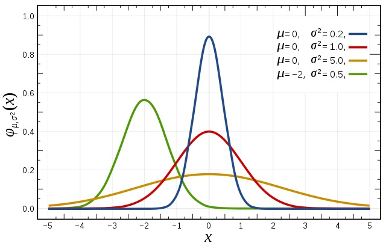

Статистика и R
Статистика и RМерыМеры центральной тенденцииСреднее значениеМедианаМодаМеры изменчивостиРазмахСтандартное отклонениеДисперсияСтатистические характеристикиНормальное распределениеЦентральная предельная теоремаКлючевые идеи
Меры
Меры центральной тенденции
Меры центральной тенденции — показатели, представляющие собой ответ на вопрос: «На что похожа середина данных?». Но слово «середина» может быть рассчитана с учетом разных свойств данных.
Среднее значение
Среднее значение (mean) — сумма всех значений признака, деленная на количесвто измерений. Среднее значение отражает типичный показатель в наборе данных. Если мы случайно выберем один из показателей, то, скорее всего, получим значение, близкое к среднему.
x1# Python2# numpy для генератора случайных чисел3import numpy as np4
5x = np.random.normal(0, 1, 9)6
7avg_x = sum(x)/len(x)8# или9avg_x = x.mean()xxxxxxxxxx71# R2x <- rnorm(10)3mean(x)4
5x <- c(2, 1, 2, 3, 1, NA, 3, 4)6# удаляет пропущенные значения7mean(x, na.rm = TRUE)Есть также другие виды средних: среднее взвешенное и среднее усеченное.
Медиана

Медиана (median), как и среднее значение, нужна для определения типичного значения в наборе данных, но при этом в меньшей степени учитывая выбросы.
Чтобы найти медиану, данные нужно расположить в порядке возрастания. Медианой будет значение, которое совпадает с серединой набора данных. Если количество значений чётное, то берётся среднее двух значений, которые «окружают» середину.
xxxxxxxxxx221# Python2import numpy as np3x = np.random.normal(0, 1, 9)4
5# находим количество6length_x = len(x)7
8# сортируем в порядке возрастания9sorted_x = sorted(x)10
11# ищем индекс среднего элемента12middle = (length_x / 2) + 0.513
14# находим медиану15print(sorted_x[middle])16
17#-------------------18# или19#-------------------20import statistics21
22statistics.median(x)xxxxxxxxxx31# R2x <- rnorm(10)3median(x)
Мода
Мода (mode) определяет значение, которое наиболее часто встречается в наборе данных. Таким образом, мода показывает наиболее значимый фактор, формирующий среднее значение.
xxxxxxxxxx31# Python2from statistics import mode3mode([1, 1, 2, 3, 3, 3, 3, 4])xxxxxxxxxx61# R2getmode <- function(v) {3 uniqv <- unique(v)4 uniqv[which.max(tabulate(match(v, uniqv)))]5}6getmode(c(2, 1, 2, 3, 1, 2, 3, 4))
Меры изменчивости

Меры изменчивости или меры разброса отвечают на вопрос: «Как сильно варьируются данные?».
Размах
Размах (Range) — разность максимального и минимального (крайние) значения.
xxxxxxxxxx31# Python2x = [1, 1, 2, 3, 3, 3, 3, 4]3range = max(x) - min(x)xxxxxxxxxx31# R2x <- rnorm(10)3range <- max(x) - min(x)Узнать, как сильно данные отличаются от типичного значения. Здесь нам помогут стандартное отклонение и дисперсия случайной величины.
Стандартное отклонение

Стандартное (cреднеквадратичное) отклонение (standard deviation) тоже является мерой разброса данных. Оно помогает узнать, как сильно данные отличаются от типичного значения. Иными словами, оно говорит о том, как сильно данные отличаются от среднего арифметического. Отношение к среднему арифметическому хорошо видно при расчёте отклонения (

Среднее арифметическое рассчитывается путём сложения всех значений и деления на их количество. Уравнение стандартного отклонения похоже, но используется, чтобы найти, на сколько в среднем значения отклоняются от типичного, и включает дополнительную операцию с извлечением корня.
В некоторых источниках можно увидеть в качестве знаменателя n вместо n-1, использование n-1 считается более корректным. Подробное объяснение можно найти здесь.
Этот результат называется стандартным отклонением на основании несмещённой оценки дисперсии. Деление на
n-1вместоnдаёт неискажённую оценку дисперсии для больших генеральных совокупностей.
xxxxxxxxxx31x <- c(34, 56, 87, 65, 34, 56, 89)2sd(x) # 22.281753plot(x)
Среднее значение и среднеквадратическое отклонение очень часто совместно используются для описания выборок и данных. Дело в том, что, как правило, большинство (а именно около
В примере с котиками они обладают так называемым нормальным размером. Оставшиеся

Дисперсия
Часто стандартное отклонение и дисперсию связывают вместе и делают это не без причины. Вот уравнение дисперсии, ничего не напоминает?
Дисперсия и стандартное отклонение — почти одно и то же! Дисперсия (variance) — просто квадрат стандартного отклонения. Более того, обе величины отражают одну и ту же вещь — меру разброса, хотя стоит отметить, что единицы измерения разные. В каких бы единицах ни измерялись ваши данные, единицы измерения отклонения будут такими же, а у дисперсии они будут возведены в квадрат.
Многие новички в статистике задают вопрос: «Зачем возводить отклонение в квадрат? Разве нельзя избавится от отрицательных слагаемых при помощи модуля?». Избавление от отрицательных значений — хорошая причина для возведения в квадрат, но не единственная. Как и на среднее значение, на дисперсию и стандартное отклонение влияют выбросы. Очень часто нас интересуют выбросы, поэтому возведение в квадрат позволяет выделить эту особенность. Если вы знакомы с математическим анализом, то поймете, что наличие экспоненциального выражения позволяет найти точку минимального отклонения.
Чаще всего при статистическом анализе нам понадобятся только среднее значение и стандартное отклонение, однако дисперсия по-прежнему важна в других академических областях. Меры центральной тенденции и разброса позволяют нам систематизировать данные и извлечь из них знания.
xxxxxxxxxx31x <- c(34, 56, 87, 65, 34, 56, 89)2sd(x)^2 # 496.47623var(x)
Статистические характеристики
Статистические характеристики (квантили распределения) — наверное, наиболее часто используемая статистическая концепция в Data Science. Обычно это первое, что применяют при исследовании набора данных. В эту концепцию входят такие понятия как отклонение, дисперсия, среднее значение, медиана, процентили и многие другие. Их довольно легко понять и реализовать в коде:
Линия посередине — это медианное значение данных. Медиану используют вместо среднего значения по той причине, что она более устойчива к аномальным значениям в данных. Первый квартиль — это 25 процентиль, т.е.
Ящик с усами прекрасно демонстрирует, что мы можем сделать с основными статистическими характеристиками:
- Когда этот ящик короткий, то можно сделать вывод, что большинство значений в данных похожи, так как много значений находится на небольшом расстоянии друг от друга.
- Когда ящик длинный, то можно сделать обратный вывод: большинство значений отличаются друг от друга.
- Если медианное значение ближе к низу, то можно сказать, что большая часть данных имеет более низкие значения. Если оно ближе к верху, то большая часть данных имеет более высокие значения. По сути, если медиана не находится по центру ящика, то это показатель того, что данные неравномерны.
- Усы очень длинные? Значит, данные имеют высокое стандартное отклонение и дисперсию, т.е. значения сильно разбросаны и отличаются друг от друга. Если усы длинные только с одной стороны ящика, то, возможно, данные заметно изменяются только в одном направлении.
Используйте статистические характеристики для быстрой, но при этом информативной оценки ваших данных.
xxxxxxxxxx21x <- c(34, 56, 87, 65, 34, 56, 89)2boxplot(x)
Нормальное распределение
Нормальное распределение или распределение Гаусса определяется медианой и стандартным отклонением. Медиана сдвигает распределение в пространстве, а отклонение влияет на масштаб. Важное отличие этого распределения от других заключается в том, что стандартное отклонение одинаково во всех направлениях. Таким образом, с распределением Гаусса чётко видно среднее значение в наборе данных. Также становится наглядным распределение данных, т.е. распределены ли они на большом промежутке или же сконцентрированы вокруг нескольких значений.

Нормальное распределение (Normal distribution) отвечает следующим требованиям:
Унимодальное - распределение, имеющее только одну моду (т.е. один "пик").
Симметричное - распределение, плотность которого симметрична относительно центральной точки (среднего). т.е. значение данных с одной и с другой стороны являются "зеркальным отображением" друг друга. Для симметричных унимодальных распределений мода, медиана и среднее совпадают.
Отклонения наблюдений от среднего подчиняются определенному вероятностному закону. Правило 
xxxxxxxxxx71# Create a sequence of numbers between -10 and 10 incrementing by 0.1.2x <- seq(-10, 10, by = .1)3
4# Choose the mean as 2.5 and standard deviation as 0.5.5y <- dnorm(x, mean = 2.5, sd = 0.5)6
7plot(x, y, type = "l")xxxxxxxxxx31x <- rnorm(50)2
3hist(y, main = "Normal DIstribution")
Центральная предельная теорема
Предположим исследуемый признак имеет нормальное распределение в генеральной совокупности (с некоторым средним и стандартным отклонением) и мы извлекаем выборки равные
Следовательно, чем больше элементов (наблюдений) в выборке, тем ближе все выборочные средние к реальному среднему в генеральной совокупности. Поэтому изменчивость всех средних будет тем меньше чем больше элементов в генеральной совокупности.
Ключевые идеи
- описательная статистика используется для систематизации и количественного описания данных;
- среднее значение указывает на типичное значение в нашем наборе данных. Оно не робастно;
- медиана является центральным значением в ряду данных. Она робастна;
- мода — значение, которое появляется наиболее часто;
- размах — это разность между максимальным и минимальным значениями в наборе данных;
- дисперсия и стандартное отклонение являются средним расстоянием от среднего арифметического значения.